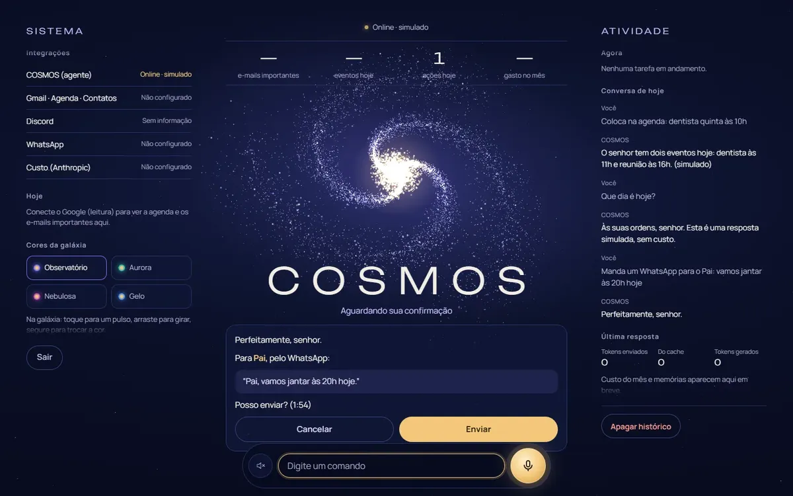
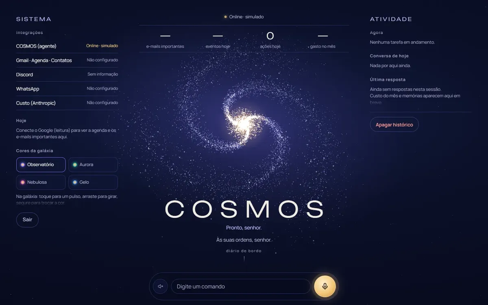
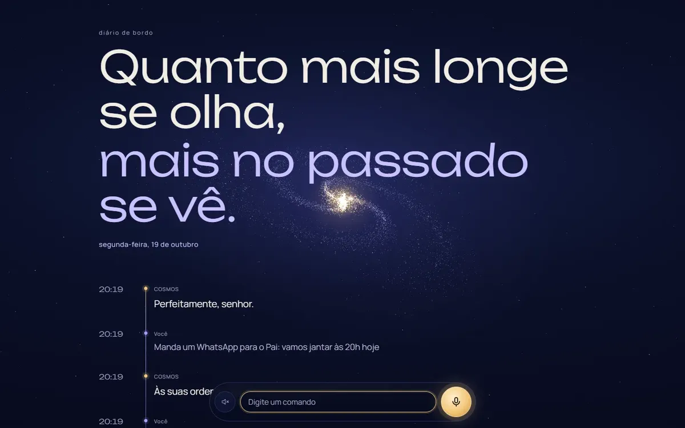
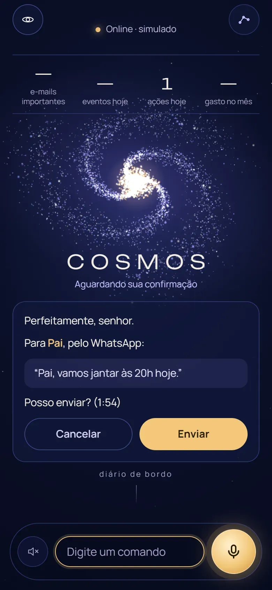
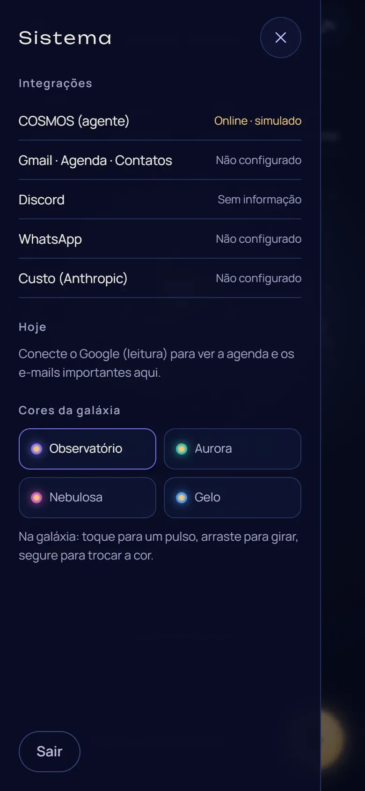

WhatsApp
"Envia para o Pai que vamos jantar às 20h"
Acha o contato pelo apelido, lê o texto exato e pergunta "Posso enviar?". Só envia depois do sim.
A arquitetura de um assistente de IA por voz e texto que manda WhatsApp, responde e-mails e marca reuniões. Com o seu nome, no seu servidor.
Se preferir, peça o seu pelo WhatsApparraste para girar · clique para um pulso · segure para trocar a cor
Com legendas no vídeo.
O vídeo de uso real está sendo gravado.
Conversa, sugere, escreve um rascunho…
e deixa o resto com você.
O COSMOS executa: envia, agenda, responde e lembra. E só conta como feito quando a ferramenta confirma.
Mensagem a outra pessoa, e-mail, convite ou apagar: tudo passa por um cartão com o texto exato. Responda por voz ("sim, pode enviar") ou no botão. O código de confirmação é de uso único e vale por cerca de 2 minutos.
Uma ação só conta como feita quando a ferramenta confirma. Contato ambíguo vira pergunta, não chute.
Todo número e todo estado da tela vêm de um evento real. Fonte fora do ar mostra "—", nunca um número inventado.
Perfeitamente, senhor.
Para Pai, pelo WhatsApp:
"Pai, vamos jantar às 20h hoje."
Posso enviar? (2:00)
Enviado, senhor. Só agora ele diz que fez.
exemplo: a Agenda e o custo estão fora do ar, então aparece "—"

"Envia para o Pai que vamos jantar às 20h"
Acha o contato pelo apelido, lê o texto exato e pergunta "Posso enviar?". Só envia depois do sim.

"Tenho e-mail importante?"
Lista os não lidos importantes das últimas 24 h, em uma frase cada. Para responder, mostra destinatário, assunto e texto e espera a confirmação.

"Marca dentista quinta às 10h"
Cria o evento direto no Google Agenda, no fuso de São Paulo.

"Marca reunião com o João amanhã às 15h"
30 minutos, convite por e-mail e link do Google Meet, com confirmação antes de o convite sair.
"Me lembra às 18h de ligar para o banco"
Agenda o lembrete, que chega no seu WhatsApp na hora certa.

"Guarda que eu prefiro reuniões de manhã"
Memoriza preferências e pessoas frequentes. Senhas, códigos e dados bancários, nunca.
Fale ou digite.
O microfone para sozinho no silêncio, a sua fala vira texto em instantes e a resposta sai em voz natural, com um serviço reserva se o principal falhar. Uma frase ambígua como "sim, mas…" não dispara nada.
No app, ela é desenhada em tempo real com shaders próprios e cada estado vem de um evento real: o volume do microfone, a voz do COSMOS, a confirmação pendente. Aqui, quem mexe é você.
estado
cores
Tudo roda num servidor só seu, em contêineres isolados. Uma única porta, protegida por HTTPS, fala com a internet; o agente e o WhatsApp ficam numa rede interna, invisíveis de fora.
COSMOS
Às suas ordens.
Nome, marca e íconesPersonalidade e regras de operaçãoCores e paletasVozModelo de IANovas skills e integrações
170+
testes automatizados
0
violações de acessibilidade no axe
1
serviço exposto à internet
5
tentativas de login erradas e o acesso bloqueia
~2 min
de validade do código de confirmação
0
segredos no navegador
O que o seu assistente precisa fazer, com quais contas e com qual personalidade.
Eu instalo no seu servidor, com o nome, a voz, as cores e as integrações que você escolher.
No navegador ou instalado no iPhone pela tela inicial. As contas e os dados continuam seus.
A estimativa de operação é de R$ 120 a 250 por mês, somando servidor, IA e voz, com limite de gasto configurado. Você paga direto aos serviços, nas suas próprias contas.
Com você. O COSMOS roda num servidor seu e se conecta às suas próprias contas. Conversas, memória e chaves de acesso ficam com você, não comigo.
Não. É um assistente de um único usuário, hospedado no seu servidor. Você acessa pelo navegador e pode instalar no iPhone como app pela tela inicial.
O COSMOS se conecta ao WhatsApp por API e envia mensagens por você, sempre pedindo confirmação antes de enviar. Como a integração funciona no seu caso, eu explico na nossa conversa.
Sim. O modelo de IA é trocável, e a voz também: dá para usar a voz que você quiser.
Sob consulta: depende das integrações, da personalização e do servidor. Vamos conversar.
valor da implantação sob consulta